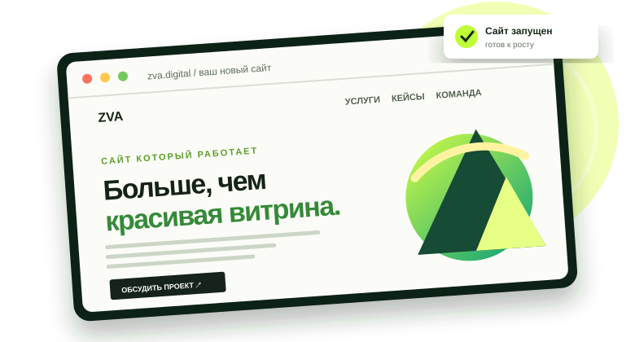
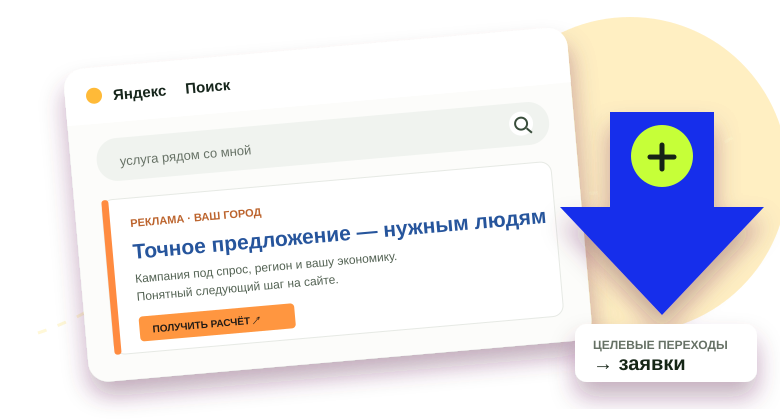
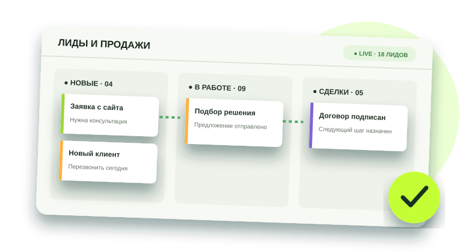
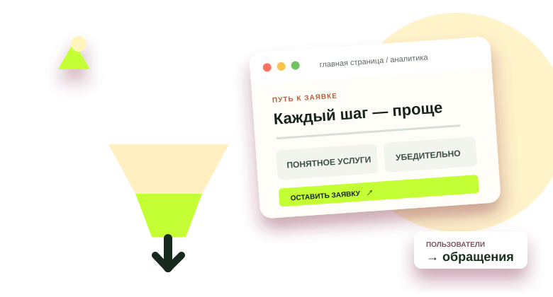

01СОЗДАНИЕ САЙТОВСайты,
Сайты,
которые ведут
к заявке
Корпоративный сайт, лендинг или магазин — не витрина, а понятный путь от предложения до обращения.
Подробнее об услуге ↗
АРХИТЕКТОР СИСТЕМ ЛИДОГЕНЕРАЦИИ
Проектируем путь клиента целиком: сайт, интернет-реклама, конверсионные инструменты и обработка обращений.
ЧТО МЫ СОБИРАЕМ
Выберите направление, которое сейчас сильнее всего повлияет на рост. Каждую услугу можно подключить отдельно или собрать в общую систему.
Корпоративный сайт, лендинг или магазин — не витрина, а понятный путь от предложения до обращения.
Подробнее об услуге ↗
Настраиваем рекламу под ваши услуги и регионы, отслеживаем обращения и стоимость заявки.
Подробнее об услуге ↗
Продвигаем сайт по запросам вашей аудитории: улучшаем техническую основу, структуру и видимость в поиске.
Подробнее об услуге ↗Выстраиваем этапы и правила обработки обращений. CRM подключаем, когда процесс к этому готов.
Подробнее об услуге ↗
Находим лишние барьеры и усиливаем ключевые шаги — от первого экрана до формы.
Подробнее об услуге ↗
КАК МЫ РАБОТАЕМ
Если можно запустить полезные изменения сейчас, не ждём завершения большого проекта.
Разбираем сайт, предложение, рекламу и аналитику. Согласуем, что можно улучшить быстро.
Улучшаем текущую площадку и подключаем трафик, чтобы начать получать обращения.
Развиваем сайт, SEO, аналитику и обработку заявок в последовательную систему.
РЕЗУЛЬТАТЫ В ДЕЛЕ · КЕЙСЫ ZVA DIGITAL
Показываем путь от исходной задачи до измеримого результата: что сделали, сколько занял запуск и как изменился поток обращений.
КОМАНДА ZVA DIGITAL
Здесь будет вся команда из 15 человек. Сейчас имена и должности, кроме руководителя, — тестовые примеры.
Менеджер проектов
Стратег интернет-маркетинга
Руководитель проектов
UX/UI-дизайнер
Веб-дизайнер
Редактор и копирайтер
Frontend-разработчик
Backend-разработчик
SEO-специалист
Локальное SEO
Специалист по Яндекс Директу
Медиапланирование
Веб-аналитик
Интеграции и CRM
Клиентский сервис
ЕСТЬ ЗАДАЧА?
Расскажите, что нужно запустить или улучшить. Обсудим приоритеты и ближайший практический шаг.
КОНТАКТЫ
Обсудим вашу задачу, ответим на вопросы и договоримся о следующем шаге.
ОБСУДИМ ВАШУ ЗАДАЧУ
Оставьте контакт — уточним задачу и подскажем следующий шаг.